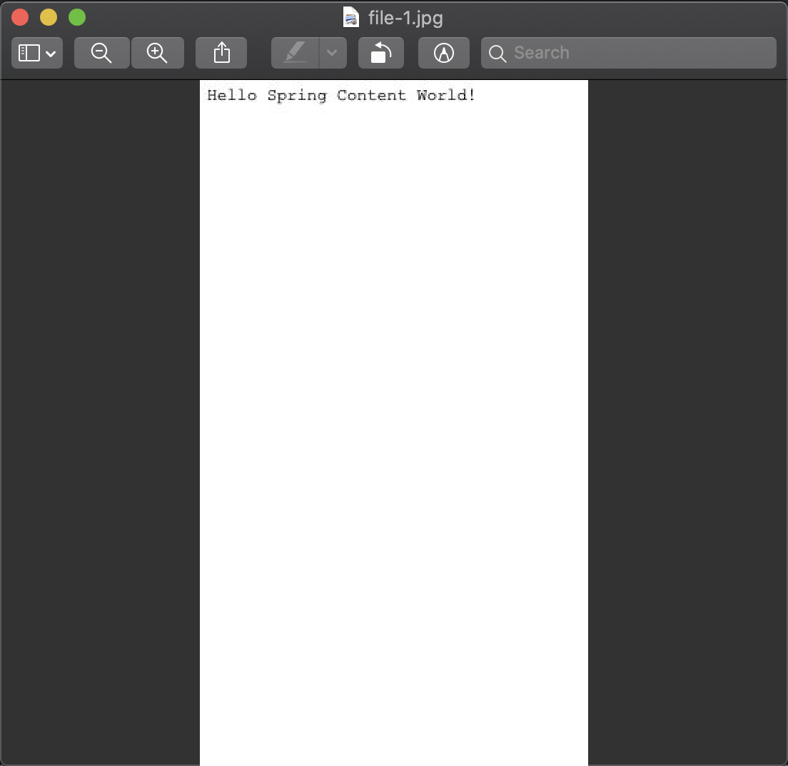
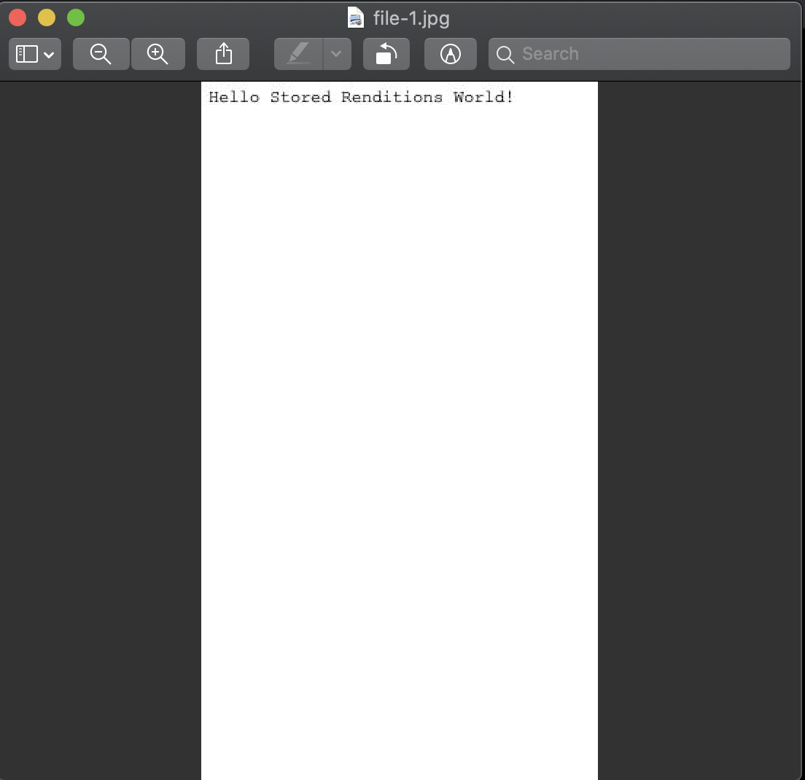

Getting Started Spring Content with Fulltext
What you'll build
We'll build on the previous guide Getting Started with Spring Content REST API.
What you'll need
-
About 30 minutes
-
A favorite text editor or IDE
-
JDK 1.8 or later
-
Maven 3.0+
How to complete this guide
Before we begin let's set up our development environment:
-
Download and unzip the source repository for this guide, or clone it using Git:
git clone https://github.com/intesys/spring-content-gettingstarted.git -
We are going to start where Getting Started with Spring Content REST API leaves off so
cdintospring-content-gettingstarted/spring-content-rest/complete
When you’re finished, you can check your results against the code in
spring-content-gettingstarted/spring-content-with-fulltext/complete.
Update dependencies
Add the it.intesys:spring-content-renditions-boot-starter dependency.
pom.xml
<?xml version="1.0" encoding="UTF-8"?>
<project xmlns="http://maven.apache.org/POM/4.0.0"
xmlns:xsi="http://www.w3.org/2001/XMLSchema-instance"
xsi:schemaLocation="http://maven.apache.org/POM/4.0.0 http://maven.apache.org/xsd/maven-4.0.0.xsd">
<modelVersion>4.0.0</modelVersion>
<artifactId>spring-content-with-renditions</artifactId>
<parent>
<groupId>it.intesys</groupId>
<artifactId>gettingstarted-spring-content</artifactId>
<version>0.0.1-SNAPSHOT</version>
<relativePath>../../pom.xml</relativePath>
</parent>
<dependencyManagement>
<dependencies>
<dependency>
<groupId>org.springframework.boot</groupId>
<artifactId>spring-boot-starter-parent</artifactId>
<version>3.5.7</version>
<type>pom</type>
<scope>import</scope>
</dependency>
</dependencies>
</dependencyManagement>
<dependencies>
<dependency>
<groupId>org.springframework.boot</groupId>
<artifactId>spring-boot-starter-web</artifactId>
</dependency>
<dependency>
<groupId>org.springframework.boot</groupId>
<artifactId>spring-boot-starter-data-jpa</artifactId>
</dependency>
<dependency>
<groupId>com.h2database</groupId>
<artifactId>h2</artifactId>
</dependency>
<dependency>
<groupId>org.springframework.boot</groupId>
<artifactId>spring-boot-starter-data-rest</artifactId>
</dependency>
<dependency>
<groupId>it.intesys</groupId>
<artifactId>spring-content-commons</artifactId>
<version>${spring.content.version}</version>
</dependency>
<dependency>
<groupId>it.intesys</groupId>
<artifactId>spring-content-fs-boot-starter</artifactId>
<version>${spring.content.version}</version>
</dependency>
<dependency>
<groupId>it.intesys</groupId>
<artifactId>spring-content-rest-boot-starter</artifactId>
<version>${spring.content.version}</version>
</dependency>
<dependency>
<groupId>it.intesys</groupId>
<artifactId>spring-content-renditions-boot-starter</artifactId>
<version>${spring.content.version}</version>
</dependency>
<dependency>
<groupId>org.projectlombok</groupId>
<artifactId>lombok</artifactId>
</dependency>
<!-- Test dependencies -->
<dependency>
<groupId>org.springframework.boot</groupId>
<artifactId>spring-boot-starter-test</artifactId>
<scope>test</scope>
<exclusions>
<exclusion>
<groupId>org.junit.jupiter</groupId>
<artifactId>junit-jupiter-api</artifactId>
</exclusion>
<exclusion>
<groupId>org.junit.jupiter</groupId>
<artifactId>junit-jupiter-engine</artifactId>
</exclusion>
</exclusions>
</dependency>
<dependency>
<groupId>io.rest-assured</groupId>
<artifactId>spring-mock-mvc</artifactId>
<scope>test</scope>
</dependency>
<dependency>
<groupId>com.github.paulcwarren</groupId>
<artifactId>ginkgo4j</artifactId>
<version>${ginkgo.version}</version>
<scope>test</scope>
</dependency>
</dependencies>
<build>
<plugins>
<plugin>
<groupId>org.springframework.boot</groupId>
<artifactId>spring-boot-maven-plugin</artifactId>
</plugin>
</plugins>
</build>
</project>
Update File
To be able to return renditions we need to know the mime-type of the existing
content. Annotate the mimeType field with the MimeType annotation so that it
will be by Spring Content REST.
src/main/java/gettingstarted/File.java
package gettingstarted;
import java.util.Date;
import java.util.UUID;
import jakarta.persistence.Entity;
import jakarta.persistence.GeneratedValue;
import jakarta.persistence.GenerationType;
import jakarta.persistence.Id;
import org.springframework.content.commons.annotations.ContentId;
import org.springframework.content.commons.annotations.ContentLength;
import org.springframework.content.commons.annotations.MimeType;
import lombok.Getter;
import lombok.NoArgsConstructor;
import lombok.Setter;
@Entity
@Getter
@Setter
@NoArgsConstructor
public class File {
@Id
@GeneratedValue(strategy = GenerationType.AUTO)
private Long id;
private String name;
private Date created = new Date();
private String summary;
@ContentId private String contentId;
@ContentLength private long contentLength;
Update FileContentStore
So that we can fetch renditions make your FileContentStore extend Renderable.
src/main/java/gettingstarted/FileContentStore.java
package gettingstarted;
import org.springframework.content.commons.renditions.Renderable;
import org.springframework.content.commons.store.ContentStore;
import org.springframework.stereotype.Component;
@Component // just to keep the ide happy!
public interface FileContentStore extends ContentStore<File, String>, Renderable<File> {
}
Build an executable JAR
If you are using Maven, you can run the application using mvn spring-boot:run.
Or you can build the JAR file with mvn clean package and run the JAR
by typing:
java -jar target/gettingstarted-spring-content-with-renditions-0.0.1.jar
Test renditions
Create an entity:
curl -X POST -H 'Content-Type:application/hal+json' -d '{}' http://localhost:8080/files/
Associate content with that entity:
curl -X PUT -H 'Content-Type:text/plain' -d 'Hello Spring Content World!' http://localhost:8080/files/1/content
Fetch the content:
curl -H 'Accept:text/plain' http://localhost:8080/files/1/content
And you should see a response like this:
Hello Spring Content World!
Fetch the content again but this time specify that we want a jpeg rendition of the content by specify
the mime-type image/jpeg as the accept header. Let's time the operation too. We'll use this later. As
it is an image let's save it to a file:
time curl -H 'Accept:image/jpeg' http://localhost:8080/files/1/content --output /tmp/file-1.jpg
Note the time the operation tookk and inspect the image open /tmp/file-1.jpg and you should see an image like this:

Figure 1. Spring Content Rendition
Stored Renditions
This is useful but rendering content on-demand everytime is unnecessary. Let's store the rendition instead.
Update File
Add a second content property to store the rendition.
src/main/java/gettingstarted/File.java
package gettingstarted;
import java.util.Date;
import java.util.UUID;
import jakarta.persistence.Entity;
import jakarta.persistence.GeneratedValue;
import jakarta.persistence.GenerationType;
import jakarta.persistence.Id;
import org.springframework.content.commons.annotations.ContentId;
import org.springframework.content.commons.annotations.ContentLength;
import org.springframework.content.commons.annotations.MimeType;
import lombok.Getter;
import lombok.NoArgsConstructor;
import lombok.Setter;
@Entity
@Getter
@Setter
@NoArgsConstructor
public class File {
@Id
@GeneratedValue(strategy = GenerationType.AUTO)
private Long id;
private String name;
private Date created = new Date();
private String summary;
@ContentId private String contentId;
@ContentLength private long contentLength;
@MimeType private String contentMimeType;
@ContentId private UUID renditionId;
@ContentLength private Long renditionLen;
@MimeType private String renditionMimeType;
}
Add Event Handler
Next let's add an event handler that uses the rendition service to convert the text/plain content to image/jpeg and store
it in the second content property we just created. Then remove it again when the content is also removed.
src/main/java/gettingstarted/StoredRenditionsEventHandler.java
package gettingstarted;
import java.io.IOException;
import java.io.InputStream;
import java.io.OutputStream;
import java.util.UUID;
import org.apache.commons.io.IOUtils;
import org.springframework.beans.factory.annotation.Autowired;
import org.springframework.content.commons.annotations.HandleAfterSetContent;
import org.springframework.content.commons.annotations.HandleBeforeUnsetContent;
import org.springframework.content.commons.annotations.StoreEventHandler;
import org.springframework.content.commons.io.DeletableResource;
import org.springframework.content.commons.property.PropertyPath;
import org.springframework.content.commons.renditions.RenditionService;
import org.springframework.content.commons.repository.events.AfterSetContentEvent;
import org.springframework.content.commons.repository.events.BeforeUnsetContentEvent;
import org.springframework.core.io.Resource;
import org.springframework.core.io.WritableResource;
@StoreEventHandler
public class StoredRenditionsEventHandler {
@Autowired
private FileRepository repo;
@Autowired
private FileContentStore store;
@Autowired
private RenditionService renditionService;
@HandleAfterSetContent
public void onAfterSetContent(AfterSetContentEvent event)
throws IOException {
File entity = (File)event.getSource();
long renderedLength = 0;
try (InputStream originalInputStream = store.getContent(entity, PropertyPath.from("content"))) {
InputStream renderedContent = renditionService.convert("text/plain", originalInputStream, "image/jpeg");
Resource renditionResource = store.getResource(entity, PropertyPath.from("rendition"));
if (renditionResource == null) {
String newId = UUID.randomUUID().toString();
renditionResource = store.getResource(newId);
store.associate(entity, PropertyPath.from("rendition"), newId);
}
try (OutputStream renditionPropertyStream = ((WritableResource)renditionResource).getOutputStream()) {
renderedLength = IOUtils.copyLarge(
renderedContent,
renditionPropertyStream);
}
}
entity.setRenditionLen(renderedLength);
entity.setRenditionMimeType("image/jpeg");
}
@HandleBeforeUnsetContent
public void onBeforeUnsetContent(BeforeUnsetContentEvent event) throws IOException {
File entity = (File)event.getSource();
((DeletableResource)store.getResource(entity, PropertyPath.from("rendition"))).delete();
entity.setRenditionId(null);
entity.setRenditionLen(0L);
entity.setRenditionMimeType(null);
}
}
and register it.
src/main/java/gettingstarted/SpringContentApplication.java
package gettingstarted;
import org.springframework.boot.SpringApplication;
import org.springframework.boot.autoconfigure.SpringBootApplication;
import org.springframework.context.annotation.Bean;
@SpringBootApplication
public class SpringContentApplication {
public static void main(String[] args) {
SpringApplication.run(SpringContentApplication.class, args);
}
@Bean
public StoredRenditionsEventHandler storedRenditionsEventHandler() {
return new StoredRenditionsEventHandler();
}
}
Test Store Renditions
Rebuild and restart your application and let's replay the operations we performed earlier.
Create an entity:
curl -X POST -H 'Content-Type:application/hal+json' -d '{}' http://localhost:8080/files/
Associate content with that entity:
curl -X PUT -H 'Content-Type:text/plain' -d 'Hello Stored Renditions World!' http://localhost:8080/files/1/content
Fetch the content again specifying that we want a jpeg rendition of the content by specifying
the mime-type image/jpeg as the accept header. Note, we are still addressing the 'content' property. Let's time the operation again. We can compare this to our previous timing. And for ease save it to a file:
time curl -H 'Accept:image/jpeg' http://localhost:8080/files/1/content --output /tmp/file-1.jpg
Note the time completed quicker (roughly twice as fast) as it was returning the previous stored rendition rather than converting it on the fly. Inspect the image by opening /tmp/file-2.jpg and you should see an image like this:

Figure 2. Spring Content Rendition
Summary
Congratulations! You've just written a simple application that uses Spring Content and Spring Content Renditions to be able to transform content from one format to another and to store that rendered content for quicker access later on.
This guide demonstrates the Spring Content Renditions Module. This module supports several renderers out-of-the-box satisfying most use cases. However, you may also add your own renderers using the RenditionProvider extension point. For more details see the Spring Content Renditions reference guide.